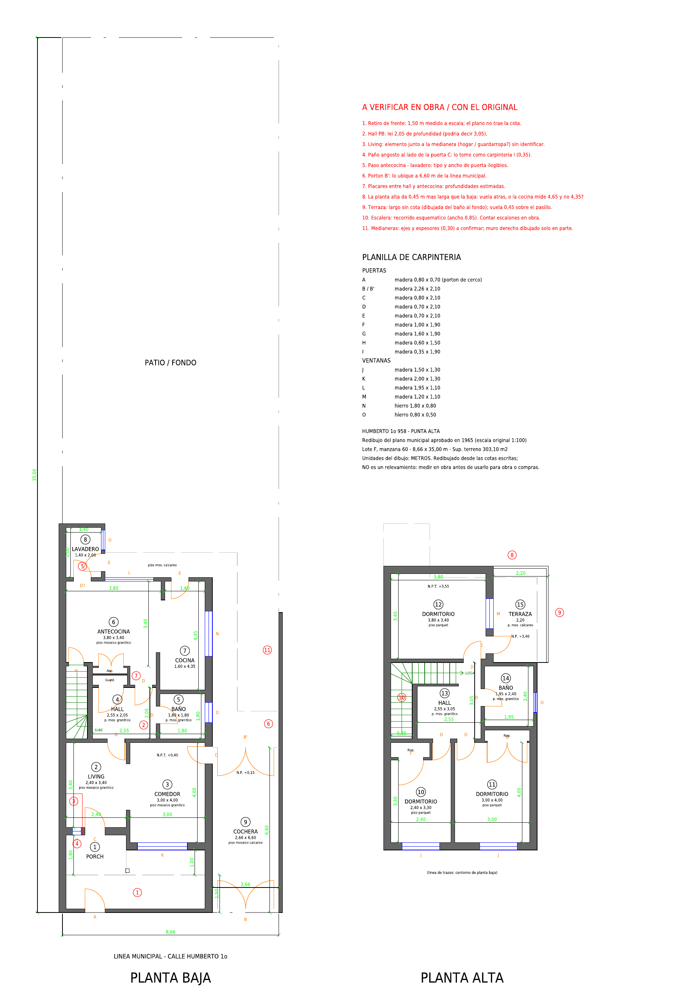

Plano digitalizado
HUMBERTO 954 · PLANTA BAJA Y PLANTA ALTA · METROS

Redibujado desde las cotas escritas del plano municipal de 1965. Los círculos rojos numerados marcan puntos a verificar. No es un relevamiento: medir en obra antes de usarlo para obra o compras.